Storia
LA PROSTATA FRA CURIOSITA’ E STORIA
(liberamente tratto da “Una prostata nella storia” di A.Venturini)
EXCURSUS STORICO
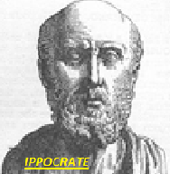Nonostante la fondamentale importanza di questa ghiandola nella fisiologia della riproduzione e nella patologia della minzione, fino al Sedicesimo Secolo, praticamente non se ne conosceva l’esistenza o gli si dava scarsa importanza.
Ippocrate, intuì che una stenosi del collo della vescica fosse alla base dei disturbi della minzione, ma ignorò completamente la prostata.
Anche nella medicina egizia non vi sono che accenni alla ghiandola e nessuna terapia per la ritenzione urinaria.
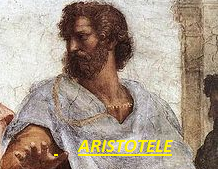Erofilo nel 300 a.C. diede una grossolana descrizione anatomica della ghiandola, rifacendosi però ai suoi studi su cadaveri di scimmia, che sono diversi dall’uomo (prostata bifida).
Aristotele quando ci parla di prostata varicosa, in realtà si riferisce alle vescicole seminali, dimostrando di ignorare la reale anatomia .
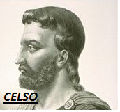Aulo Cornelio Celso (25a.C.-50d.C.) famoso medico romano, nel suo “de medicina” studiò a fondo la calcolosi vescicale, che riteneva erratamente essere la causa della ritenzione urinaria, senza però fare accenni alla prostata e alla sua ipertrofia.
Galeno (129-216d.C) è probabilmente l’autore antico che più di ogni altro è andato vicino alla realtà anatomica di questo organo. Infatti usa il termine parastatae per indicare l’epididimo e prostatai per indicare l’insieme di prostata e vescicole seminali. Inoltre, parlando dell’ostruzione dell’uretra ascrive la causa ad una tumefazione che blocca il deflusso dell’urina, ma sospetta però che sia il canale uretrale stesso che gonfiandosi provoca tale tumefazione.
Neppure Leonardo da Vinci nelle sue famose tavole di anatomia sembra occuparsi della prostata che non riconosce nelle sue dissezioni.
Finalmente il grande medico veneziano Nicolò Massa (1485-1569) descrive per primo la prostata come una specifica individualità anatomica e da allora il termine trova il suo giusto posto nei dizionari medici.
Ma il primo a iniziare a curare la prostata come causa di ostruzione urinaria, fu il grande medico e anatomista francese Jean Riolano (1580-1657), medico di corte di Enrico IV, di Luigi XIII e di Maria dei Medici.
Seguendo le sue orme sia l’anatomista olandese Thomas Bartholin (1616-1680) che l’italiano Gian Domenico Santorini (1681-1737)parlarono chiaramente di prostata in quanto ghiandola a se stante. L’olandese la descrisse come una formazione simile a due testicoli che l’introduzione di una sonda dilatava e che poi dopo la alla retrazione si restringeva.
Santorini in seguito invece la descriverà, in maniera molto più moderna, come un corpo che aggettando in vescica ne ostruisce il collo.
Arrivati al XVIII secolo oramai le osservazioni sull’ipertrofia prostatica si intensificano e gli studi anatomici sul cadavere danno conferma alle precedenti ipotesi.
Gianbattista Morgagni (1682-1771), in un suo famoso trattato di anatomia edito a Venezia nel 1761, parla specificamente di “rigonfiamento della prostata” soprattutto nei soggetti anziani, e dell’ostacolo al deflusso urinario ad esso connesso.
Ma a questo punto si era entrati nel XIX secolo e mentre tutti erano d’accordo sull’esistenza della ipertrofia prostatica quale causa di ritenzione urinaria, si cominciavano ad affinare gli strumenti chirurgici per cercare di rimuovere l’ipertrofia stessa.
L’ultimo decisivo passo in avanti nella conoscenza dell’organo, è merito del premio Nobel Charles Huggins il quale nel 1944, riuscì a dimostrare il rapporto fra crescita della prostata e testosterone.
TRATTAMENTI DELLA RITENZIONE URINARIA
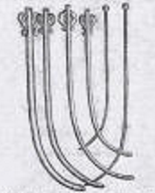Pur, se come abbiamo visto, ci sono voluti migliaia di anni per arrivare a comprendere la l’anatomia della prostata e la patogenesi dell’ostruzione urinaria, documenti antichissimi dimostrano invece che dall’epoca Mesopotamica (3000 a.C.) era già chiaro che l’introduzione di una cannula nell’uretra permetteva, a chi era ostruito, di urinare. Su di una tavoletta babilonese sta scritto:” Introdurrai un rimedio nel pene, con l’aiuto di un tubicino di bronzo”.
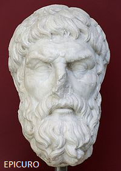Nel papiro di Ebers del 1565 a.C. si riportano esperienze mediche risalenti a mille anni prima, con l’uso di sonde uretrali. Tuttavia, anche se la strada terapeutica sembrava così chiaramente segnata, per motivi sconosciuti l’uso delle sonde uretrali cadde totalmente in disuso. A dimostrazione di ciò, è riferito da Seneca che il famoso filosofo greco Epicuro (341a.C. 271a.C.) a 72 anni, si desse la morte tagliandosi le vene, dopo che per 14 giorni non era riuscito ad urinare.
Erasistrato di Ceo (330-250a.C), che nei suoi scritti già parlava del cateterismo vescicale con sonda di argento a doppia curvatura, fu uno dei fondatori della scuola medica di Alessandria di Egitto e medico di corte presso Seleuco I, generale di Alessandro Magno.
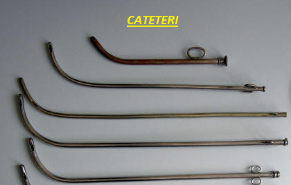I cateteri dell’antichità avevano spesso punte molto aguzze che provocavano durante l’introduzione dolori fortissimi e sanguinamenti. Purtuttavia tale tipo di strumenti avvicinava la metodica terapeutica ai giorni nostri.
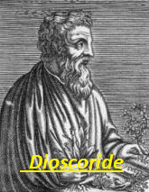Che dire invece del metodo messo a punto dal famoso medico e botanico greco Dioscoride Pedanio (40-90d.C) che nel “De Materia Medica” consiglia un metodo ancora in auge ai tempi del Re Sole. Tale metodo consisteva nell’introdurre in uretra cimici vive, che con il loro movimento scatenavano un dolore violento che poteva momentaneamente far rilassare il collo della vescica e pertanto permettere la minzione. Il concetto era giusto ed è quello che è seguito oggi (il rilassamento del collo vescicale), quando si somministrano i farmaci “alfabloccanti”.
PROSTATICI FAMOSI
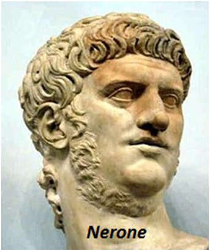L’imperatore Nerone soffriva di ipertrofia prostatica con ritenzione urinaria legava ai suoi schiavi la base del pene, cosicchè andavano in ritenzione. Dopo alcuni giorni poi li faceva venire al suo cospetto e gioiva nel vederli soffrire per l’impossibilità a urinare.
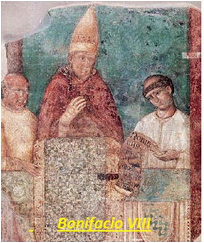Il Papa Bonifacio VIII, nemico di Dante, che non per nulla lo mette all’Inferno, è rimasto famoso per i suoi costumi corrotti e lo “schiaffo di Anagni”. Soffrì di ritenzione urinaria, della quale morì. Verso la fine del 1200, si racconta che fosse ridotto così male “che non gli restava che lingua ed occhi, perché tutto il resto del corpo si era putrefatto”.
Michelangelo Buonarroti, nacque a Roma il 6 marzo 1475. “Circa il male mio di non poter orinare -scrisse- io ne sono stato male molto male e mugghiai dì e notte senza dormire e senza riposo nessunoe per quello che giudicano i medici, dicono che io ho il mal della pietra”. Michelangelo aveva un medico di grido, il grande anatomista Realdo Colombo il quale gli prodigava cure certamente fficaci se così ebbe a scrivere al nipote il 23 marzo 1549: “io ti scrissi del mio male della pietra il quale è cosa crudelissima. Di poi sendomi stato dato da bere una certa aqqua, m’à fatto gittar tanta materia grossa e bianca porina con qualche pezzo della scorza della pietra che io son molto migliorato”.
Ma con l’avanzare degli anni le difficoltà urinarie si fecero sempre più gravi, come risulta dai suoi ultimi scritti.
Carlo V d’Asburgo, nato il 24 febbraio del 1500, soffriva di ipertrofia prostatica. La sua malattia dava come curioso effetto collaterale, una sovraeccitazione sessuale tanto che si diceva che non si staccava mai dalla dama se non dopo tre successivi “omaggi”. Durante la campagna di Germania soffriva crudelmente di disuria che a detta del suo medico, il dottor Felipe, lo poneva ogni giorno a rischio di morte(!). Il suo medico, per “macerare la carnosità” gli introduceva nell’uretra una candeletta che portava all’estremità una sostanza corrosiva a base di calce viva mescolata con bava di lumaca. La candeletta veniva tenuta in situ per otto giorni e l’operazione si ripeteva il mese successivo. Per calmare gli atroci dolori che la candeletta provocava, il dottor Felipe prescriveva al re una dieta liquida a base di latte di donna o latte di asina. Purtuttavia i disturbi urinari di Carlo d’Asburgo furono tali da costringerlo nel 1556 ad abdicare in favore del figlio Filippo.
Enrico IV di Borbone ,re di Francia dal 1589, soffriva di ipertrofia prostatica e di stenosi uretrale e fu anche lui trattato dal suo chirurgo Loyseau con candelette corrosive a base di erba sabina. La cura funzionò per qualche anno ma poi il dottor Torquet de Mayerne lo sottopose a uretrotomia. L’intervento andò bene, ma incredibilmente il chirurgo, avendo usato per l’operazione dei ferri che all’epoca erano usati solo dai barbieri-chirurghi, e pertanto erano indegni di un medico, dovette fuggire in Inghilterra dove divenne il chirurgo di
Giacomo I.
Il Cardinale Richelieu ,nato nel 1585, nell’aprile del 1624, divenne primo ministro del Re di Francia Luigi XIII. Nonostante lo straordinario potere di cui disponeva, nulla potè contro i disturbi provocati dalla sua ipertrofia prostatica. Soffriva frequentemente di ritenzioni urinarie e una volta non urinò per 3 giorni di seguito.
Pietro I Romanov (il Grande), Zar di Russia dal 1682, morì a soli 53 anni per una ritenzione urinaria di origine prostatica. Voltaire però (anche lui prostatico), sosteneva che tale ritenzione fosse stata causata invece da un tumore del collo della vescica.
Voltaire, il famosissimo letterato, storico e ideologo parigino, nato nel 1694, fu anch’esso un grande prostatitico. Negli ultimi anni della sua vita soffriva di notevolissima difficoltà ad urinare (stranguria), soprattutto di notte e contro i dolori assumeva grosse dosi di oppiacei. Si dice che nell’anno della sua morte, che avvenne nel 1778, il letterato fosse talmente annichilito dall’oppio che di notte beveva l’urina del suo pitale, per sedare la sete.
All’autopsia la sua vescica risultò “purulenta, ulcerata e con pareti ispessite. La sua prostata era molto aumentata di volume”.
Pio VI (Papa Braschi), nato nel 1717, venne imprigionato da Napoleone I, dopo la proclamazione della Repubblica Romana nel 1789 e fu deportato in Francia. Negli ultimi anni della sua vita, soffriva di ipertrofia prostatica benigna e veniva sottoposto a frequenti e dolorosissimi cateterismi uretrali
Per Napoleone III l’ipertrofia prostatica ebbe tragiche ripercussioni per la sorte della Francia. Già dal 1853 accusava dolori vescicali che attribuiva alle lunghe cavalcate. Ma i dolori con il passar del tempo si acuivano progressivamente in quanto oltre alla ipertrofia prostatica, Napoleone soffriva anche di calcolosi vescicale, conseguenza della ritenzione.
Nonostante i suoi medici consigliassero l’intervento, l’Imperatore, per paura di morire, lo rifiutò sempre. Per cercare di lenire il dolore causato sia dalla ritenzione urinaria, ma soprattutto dalla calcolosi vescicale e dalle continue infezioni ad essa collegate, Napoleone cominciò a far ricorso agli oppiacei.
La storia ci dice che già dall’inizio del 1870 la maggior parte della giornata non era più lucido per governare. Il prof. Sèe, fatto venire a consulto, raccontò di aver trovato l’Imperatore “gemente con intorno alla sua poltrona bottiglie ripiene di urina sporca e sanguinolenta; di giorno in giorno sempre più prostrato, egli poneva gli ultimi residui della sua volontà a non compiangersi troppo”.
Purtuttavia nel luglio del 1870 decise di iniziare la guerra contro la Prussia e partì a cavallo per dirigere personalmente le operazioni. Ma fece male i calcoli sulla reale potenza dell’esercito avversario e il 2 settembre 1870, alla testa di 120.000 uomini fu circondato a Sedan da 220.000 uomini dell’esercito Prussiano. Si arrese, ma non per la preponderanza nemica ma per i dolori! Andò ad arrendersi personalmente a Guglielmo II, Imperatore di Prussia, facendosi trasportare su di un calesse.
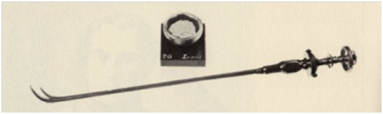Era ormai allo stremo e doveva essere cateterizzato almeno due volte al giorno e viveva tamponato con asciugamani imbibiti di urina sangue e pus ed era troppo intontito dall’oppio per stare a cavallo a dirigere la battaglia.
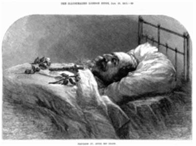Venne inviato in esilio in Inghilterra, dove i sintomi si aggravarono. Alla fine l’operazione non apparve più procrastinabile. Così, in via preliminare, il giorno dopo il Natale 1872, il paziente fu sottoposto ad anestesia dal dottor Joseph Clover, “il più esperto cloroformista del momento”. Il sondaggio confermò la presenza di un calcolo “grosso come un uovo di piccione”, e venne subito pianificato un intervento di litotrissia. Il paziente rientrò momentaneamente nella sua residenza, per essere poi operato il 2 gennaio 1873.
L’intervento fu eseguito dal famosissimo prof. Thompson, che gli estrasse una prima parte del grosso calcolo. Ma dopo 7 gg., quando ci si preparava ad un secondo intervento, l’augusto paziente morì.
Papa Pio XII soffriva di ipertrofia prostatica ma credeva di più all’omeopatia che alla medicina ufficiale. Pertanto il suo medico, l’Archiatra Pontificio Prof. Galeazzi-Lisi, per assecondarlo, lo sottoponeva alle cure più strambe da lui stesso inventate (la famosa dieta biogenetica). Nonostante ciò il Papa peggiorava sempre (ovviamente!) e alla fine l’Archiatra fu costretto, per curare l’augusto paziente, a chiamare due veri medici, che lui
stesso scelse in base “ad una sicura fede monarchica”(sic!)
Charles de Gaulle il celebre generale francese, successivamente Presidente della V Repubblica Francese, nacque nel 1890. Soffriva di ipertrofia prostatica, ma nonostante le ripetute cure mediche, i dolori erano così intensi da consigliare l’intervento chirurgico. Siamo nel marzo 1964 ed il presidente si doveva recare in Messico per una importantissima missione diplomatica. Non aveva assolutamente il tempo di operarsi e allora il suo medico gli consigliò, per risolvere temporaneamente il problema, di porre un catetere a permanenza. Venuto però a sapere che questo catetere (il Foley) era di invenzione americana, lui convinto antiamericano, non volle saperne di metterlo, finchè non gli fu assicurato che era stato costruito il Francia. La cosa poi rimase segreto di Stato!
De Gaulle venne poi felicemente operato di prostatectomia sovrapubica dal suo urologol il Prof. Aboulker nell’aprile dello stesso anno.
 Ronald Reagan, è stato il 40° Presidente degli Stati Uniti dal 1981 al 1989. Nell’agosto el 1986 la sua prostata risultò così ingrossata da imporre senza più indugi l’intervento. Fu reclutata l’equipe più ultraspecializzata che si potesse reperire negli USA. Testimoni raccontano che la sala operatoria “era affollata come la metropolitana di N.Y. nell’ora di punta”. I chirurghi asportarono magistralmente la prostata del Presidente, per via transuretrale, con la tecnica oggi comunemente usata (la TURP, vedi filmati).
Ronald Reagan, è stato il 40° Presidente degli Stati Uniti dal 1981 al 1989. Nell’agosto el 1986 la sua prostata risultò così ingrossata da imporre senza più indugi l’intervento. Fu reclutata l’equipe più ultraspecializzata che si potesse reperire negli USA. Testimoni raccontano che la sala operatoria “era affollata come la metropolitana di N.Y. nell’ora di punta”. I chirurghi asportarono magistralmente la prostata del Presidente, per via transuretrale, con la tecnica oggi comunemente usata (la TURP, vedi filmati).